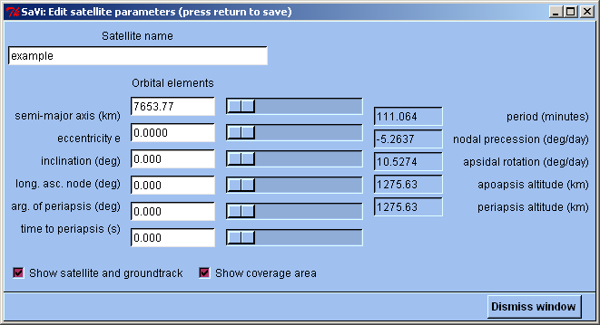
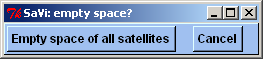

TLE loading tool - to see this, use the File menu.
This manual introduces SaVi to the user. Descriptions of the satellite constellations that SaVi simulates are provided from the Help menu.
Other documentation is available for SaVi in textfiles supplied with the SaVi software, which can also be read from the Help menu:
Further information on SaVi is available on the web at http://savi.sourceforge.net/ and http://personal.ee.surrey.ac.uk/Personal/L.Wood/software/SaVi/.
Support for SaVi is provided via the savi-users mailing list.
Geomview provides SaVi with three-dimensional rendering capabilities. When using Geomview, the Look, Fly and Orbit buttons in its toolbar are the most useful; the stationary axes allow you to see the Earth rotating against something fixed as you orbit your camera view around. (Rotate leaves the cameras in all views fixed, while rotating all objects; Orbit allows you to alter a single camera window.)
Documentation for Geomview, describing the many features of Geomview, is available separately on the web at http://www.geomview.org/.
Note that SaVi has a number of simple command-line options that can be seen by typing:
./savi -help
which provides brief summary documentation of the available options.
Below is a brief guide to the main features of SaVi's graphical user interface:
The main window is where satellite parameters are edited and where Geomview (if it is in use) is controlled from the Rendering menu. The simulation is run forwards or backwards in time using the >> and << buttons on the playbar at the bottom of the window. > and < step forwards or backwards a single interval of time; the time interval between simulation steps is set to a default of sixty seconds, and can be changed here.
Main window - to see this, launch SaVi.
Resizing this window to make it larger, so that you can see information on more satellites at once, is a good idea.
Double-click a line listing satellite parameters to open the 'Edit satellite parameters' window and edit values directly. Press return after entering each value to update the satellite and change the simulation. A custom list of edited satellites can be saved for posterity as a script to be loaded in again later - see the File menu in the main window's menubar.
Clicking a line listing satellite parameters highlights it, giving it a purple cross in the Coverage and Fisheye windows, and a yellow surround in Geomview's Camera window. Control-clicking a line adds it to or removes it from the current selection. Shift-clicking a line includes the range of satellites from the current selection to that line.
The menubar's Edit menu allows you to copy or cut selected satellites, or edit existing or new satellite parameter lines, via an edit box. Like all SaVi windows, this edit box can be left open while other windows are active. The edit box will always show parameters for the last-selected satellite.

Edit window - to see this, use the Edit menu, or double-click a satellite
parameter line.
Individual satellites and their coverage can be hidden from view here, by using the checkboxes.
Simulation constants can also be edited from the Edit menu. Altering these from Earth normal is not for the faint of heart.
Simulation constants - to see this, use the Edit menu.
The menubar's Views menu allows you to open the coverage panel and fisheye windows, described further below. Opening the coverage panel is often the first thing that you do upon launching SaVi. Other options in the Views menu duplicate the playbar at the bottom of the window, including the 'Restart' button to reset the clock to time 0.
The Constellations menu allows you to load in simulations of known satellite constellations, both existing and proposed. You can also empty space by deleting all created satellites, or run the rosette generator to easily create a custom constellation. The simulations on this menu are split into several groups:
TLE loading tool - to see this, use the File menu.
Decriptions of these systems are available in the Details window that is always accessible from the Help menu. Many of these constellations are described in material introducing satellite constellations.
Note that loading in a constellation from the menu replaces all existing satellites.
To add a constellation to existing satellites that you wish to preserve, use Load... in
the File menu, and load in a Tcl script from SaVi's data/ directory.
Rosette constellations can be easily created using the Ballard rosette tool, which can also generate a number of preset constellations.
Ballard rosette tool - to see this, use the Constellations menu.

Empty space of all satellites dialog - to see this, use the Constellations menu.
The Rendering menu includes a Real-time mode option that attempts to synchronise SaVi to the computer's clock, so that an interval is simulated every second. If you set to 1 second per interval, SaVi attempts motion in real time. This mode option is most useful on very fast computers.
The Rendering menu is complete when SaVi is running with Geomview. The full menu allows you to control how Geomview shows the constellations in its Camera windows. To change the satellite type shown in Geomview, select a marker type from the top section. To restore the default green dots, select that marker type again.
By turning off Show central body, an outline Earth is produced. This is useful when used with Geomview's spherical projection (in the Geomview window's Space menu.)
Animate in Geomview can be turned off temporarily if Geomview becomes problematic, so SaVi can be used standalone. This option is useful on slower computers.
The Help menu identifies SaVi and provides brief installation information.
In the coverage panel a map projection of the Earth and visible coverage is shown. The coverage panel is where most viewing work in SaVi is done. It is likely that this will be the first option selected once SaVi is running, and that most work will be done using the menubar at the top of this panel's window.
When the coverage panel is first opened from the Views menu, you will be asked how large you want the map to be, and you can also select how many coverage diversity colours are needed. The Earth map can be either 600x300 pixels or 1024x512 pixels in size. Four colors is the default; more are useful when viewing large numbers of satellites, such as the GPS and Galileo navigation constellations.
Choose coverage panel size/colours - to see, use Views menu on main window.
After you have chosen, the coverage panel will open. Here, the smaller coverage panel is shown.
 Coverage panel - to see, use Views menu on main window.
Coverage panel - to see, use Views menu on main window.
Stretching this window horizontally will show two projections side-by-side; this is useful for looking at coverage at the edge of the map, which lies in the middle of the two copies.
A number of different map projections can be chosen:
The unprojected views and the cylindrical view can send their maps as texturemaps to Geomview to draw on the world sphere in its camera. This texturemapping feature is controlled from the coverage panel's Rendering menu.
Clicking in the map sets coordinates that are passed to the fisheye window, and can then be selected in that window to replace the current coordinates in use. This is a two-step process to prevent stray clicks from inadvertently changing the fisheye. To change the fisheye in one step, control-click the coverage map.
Satellite coverage (which defaults to yellow/red) is intended to give an idea of the number of satellites visible from a point, or available diversity. The higher the number of satellites covering a point, the deeper the shade of red.
Interval decay (which defaults to shades of blue) is intended to give an idea of where a satellite footprint has been and is going, even when you look at a still map snapshot. Turning this feature off replaces blue with white.
The sunlight checkbox shows a day/night terminator, reusing the last two interval decay colors. Sunlight is simulated as a 'special' satellite zero, shown at the start of the main satellite list when sunlight is turned on. Sunlight begins with time zero as an equinox.
Map colors can be controlled to taste by the Shading menu or by clicking the color wells in the key individually to launch a color selector. 'Change shading' and 'Shade between end colors' will always produce ranges of tasteful hues. To alter just the coverage or interval decay colors, uncheck the 'Show coverage' or 'Add interval decay' checkboxes before using the shading menu options.
Satellites selected in the main window will be shown in the coverage panel as purple, rather than green, as will their groundtracks.
Still and animated map snapshots can be saved from the File menu.
These are saved in .gif format. Stills can also be saved using
the simple ppm bitmap format, and .png if it is supported.
Map animations require gifsicle
to create.
The coverage of all satellites is controlled in the coverage panel by angle, pop-up menu, and slider. The angle is between 0 and 90 degrees. The angle can either indicate either:
The default mask elevation is generally more useful, as it can be shown for the ground terminal in the fisheye view. A mask elevation angle of zero degrees is the same as a half-angle of ninety degrees when the satellite is directly over the ground terminal. The slider to the right alters the angle value directly.
Computed coverage estimates are currently not accurate, and vary between projections.
The playbar is repeated at the bottom of this window for convenience.
The fisheye window shows a view of the sky looking upwards from the ground, with the horizon around the outside of the circle. North is to the top of the fisheye. East is to the left, unless the 'Reverse fisheye view' option is chosen, since this is looking up. The default location is at zero point (zero longitude, zero latitude, zero altitude, floating on the sea just off the coast of Africa).
Fisheye panel - to see, use Views menu on main window.
The fisheye window is completely resizeable, and will scale the fisheye area to suit. A larger fisheye shows a large number of satellites in view much more clearly.
If ground terminal mask elevation is selected from the coverage panel, the mask circle will be shown, and the time a satellite spends in view (i.e. within the mask area) will be indicated next to the satellite. Note that times are only accurate to +/- half the simulation interval, assuming that a satellite began moving in the fisheye outside the mask area. Setting a smaller simulation interval provides more accurate time-in-view estimates.
The equatorial geostationary arc can be drawn along with selected latitude markers, or parallels. These parallels default to 3.5 degrees of latitude, which is the limit of the geostationary exclusion zone, where frequencies used by geostationary satellites cannot be reused by other satellites, to prevent interference.
Enter new coordinates updates the fisheye to use the values in the white text boxes, which will be copied to the actual coordinates shown higher up in the fisheye panel. Use this feature to determine how many satellites are visible from a selected point on the Earth.
Reverse fisheye view switches East and West, to give an idea of satellites moving over the Earth. This can be compared with Geomview's spherical view with the central body turned off, mentioned earlier.
The best, most accurate, way to simulate a custom constellation in SaVi is either to:
savi/data
directory. Discussion of Tcl and the SATELLITE keywords specific to SaVi is
outside the scope of this note - but much can be learned from reading the code and
comments in existing scripts. Further information on Tcl is available from
http://www.tcl.tk/savi/tcl/constellations.tcl so that
it works more accurately, by staring at existing FORTRAN code and translating it into Tcl.
That is likely not for the faint of heart.
The background color in Geomview is set at the start of
savi/oogl/savi.oogl, as three fractional values between 0 and 1,
representing Red, Green and Blue.
0 0 0 is black.
1 1 1 is white.
Geomview can have multiple cameras open showing different views. Scripting of camera actions in Geomview (using its oogl object-oriented graphics language, which is a degenerate form of lisp) can be very powerful.
Notes on sources and for and details of simulated constellations can be found in the
comments to each constellation script. See the savi/data
directory, or use the View Source... button at the bottom of the
Help menu window where details of each constellation are displayed.
Use SaVi with Geomview 1.9 or later. This is strongly recommended.
Use the latest Geomview release from http://www.geomview.org/.
Further information on Geomview is available on the web at http://www.geomview.org/
Further information on SaVi is available on the web at http://savi.sf.net/